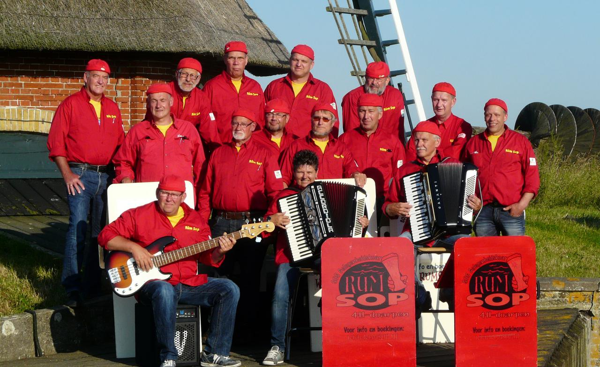

Concert Rûm Sop
Datum |
Vrijdag 19 juni 20:00 |
Toegang |
€ 7,50 (inlusief 1 consumptie) € 5,00 voor donateur |
Op vrijdagavond 16 juni 2016 om 20:00 uur geeft Rûm Sop een optreden in Mienskipshûs Doarpstsjerke Metslawier. Voor de 2e keer dit jaar een shantykoor, niet zonder reden, de akoestiek is bijzonder in de Doarpstsjerke in Metslawier, waardoor alles nog net even wat voller en mooier klinkt en het makkelijk meezingt. Ook de sfeer van de kerk maakt het een mooie locatie voor muziek en zang en de moeite waard om naar toe te gaan. Omringd door wisselende exposities, tot 25 juni kunt u nog de aquarellen bewonderen van Durkje Haringa.
Het koor uit de 4 H-dorpen, Hantum, Hantumhuizum, Hiaure en Hantumeruitburen is in 1999 opgericht als gelegenheidskoor dat zichzelf het gezelligste koor van Noordoost-Friesland noemt. Het koor bestaat uit 14 zangers en 2 accordeonisten en staat onder leiding van dirigent Jan Blom uit Dokkum. Een optreden van Rûm Sop is vooral gezellig. Zij brengen vrolijke liedjes, gezellige shanthy’s en onvervalste meezingers. Ondersteund met beamerpresentatie belooft het met veel meezingen en grappige intermezzo's een gezellige avond te worden.
Net stinne mar hinne!
Om zeker te zijn van een plaats, is deze te reserveren via stichting.doarpstsjerke.metslawier@outlook.com.

.jpg)